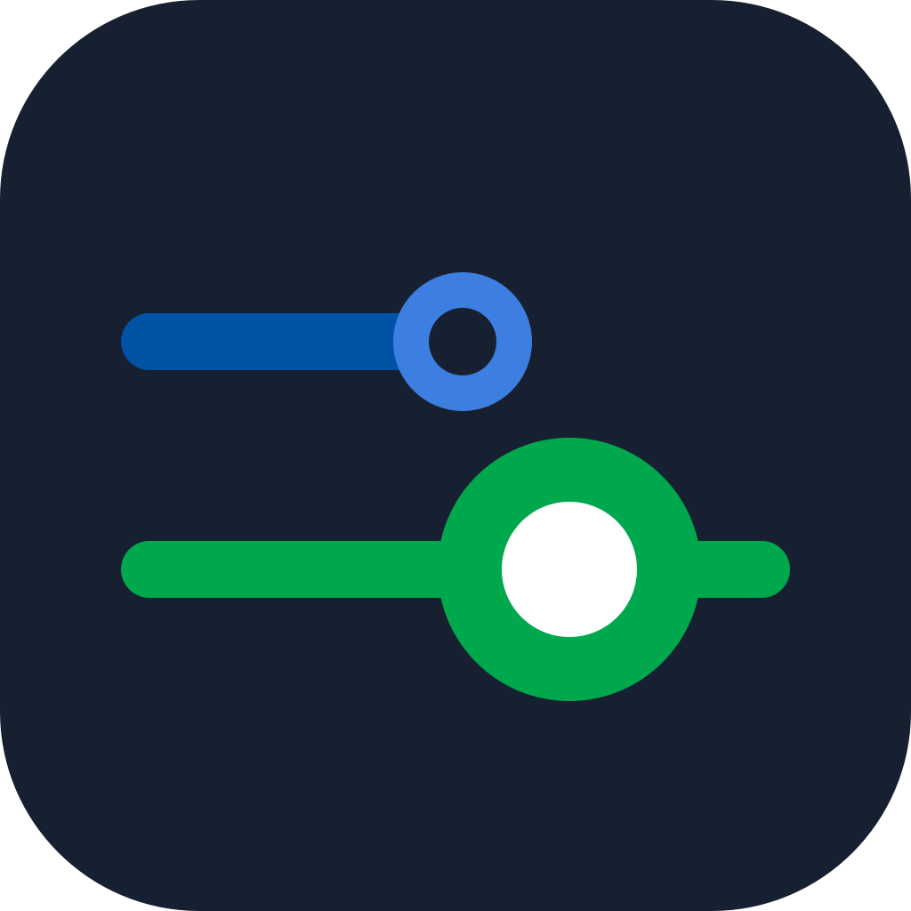

문서로 읽히는 형태, 밝은 화면에서 선명한 색.각 후보는 앱 아이콘과 .md 파일 아이콘을 한 쌍으로 구성했습니다.

후보를 누르면 확대 보기와 탐색기 예시가 열립니다.
형식이 가장 명확한 정석형
여백과 본문을 강조한 문서형
기존 정체성과 문서의 결합
읽기 전용 앱에 어울리는 책갈피
작은 크기에서도 강한 실루엣
제목과 본문이 보이는 페이지
확장자를 직접 보여주는 배지
여러 문서를 탐색하는 뷰어
문서를 모아 읽는 노트형
선명한 윤곽과 한 가지 포인트